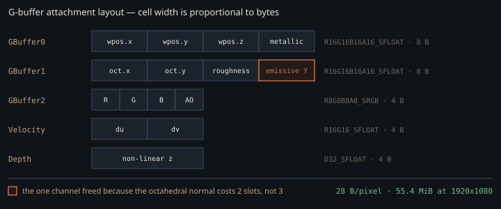

Monograph · Tree · ← Module hub · GBuffer pass
deferred
GBuffer pass
MRT packing, bindless, velocity, push constants.
What the record has to hold
A deferred renderer bets that everything the lighting equation needs about a visible surface fits into a fixed-size per-pixel record, so shading cost stops scaling with geometry × lights. The interesting part is never the bet; it is the record — what fits, what was dropped to make it fit, and which downstream pass finds out.
OHAO writes five attachments in one subpass: world position + metallic, an encoded normal + roughness + emissive luminance, albedo + AO, a two-component velocity vector, and depth. That is 28 bytes per pixel, roughly 55 MiB resident at the 1920×1080 default the pass initialises to.

Check one thing before trusting anything else written about this buffer: the normal target is `R16G16B16A16_SFLOAT`, not a packed 10-bit format.
attachments[1].format = VK_FORMAT_R16G16B16A16_SFLOAT;ohao/render/deferred/gbuffer_pass.cpp:483Comments in five files still name a packed 10-bit format for this attachment, including the header of the shared octahedral decoder:
// Octahedron normal encoding/decoding (A2R10G10B10 GBuffer format)shaders/includes/common/encoding.glsl:11Three of those five, and four of the nine shaders that `#include` that header, sit under `shaders/_disabled/` — a directory nothing actually excludes, because the shader target globs the tree recursively and compiles it too:
file(GLOB_RECURSE SHADER_SOURCESshaders/CMakeLists.txt:9The octahedral encoding is a leftover from the 10-bit format. It is not vestigial — it is now paying for something else.
The packing that buys a channel
Octahedral mapping projects a unit normal onto an octahedron and folds the lower hemisphere outward, turning any direction on the sphere into two numbers in [-1, 1] with no seam and near-uniform angular density. The G-buffer writes it biased into [0, 1] alongside two unrelated scalars:
outGBuffer1 = vec4(encodedNormal, roughness, emissiveLuminance);shaders/core/gbuffer.frag:125At 16 bits per channel the encoding buys almost no precision over storing `N.xyz` directly — half-float already resolves a normal component far below the visible threshold. What it buys is one *channel*. The normal costs two slots instead of three; roughness would have fitted in the fourth slot of an `N.xyz` layout anyway, so the one slot the encoding actually liberates is the last, and it carries the emissive intensity that would otherwise need its own attachment.
The price is colour. Only luminance survives the write, so deferred lighting reconstructs the emitted colour by tinting albedo with it:
vec3 emissive = albedo * emissiveLuminance;shaders/core/deferred_lighting.frag:311A red glow on a white surface renders white. That is a deliberate trade, but it means emissive look-dev cannot be trusted against the raster viewport.
Roughness is floored before storage:
roughness = max(roughness, 0.04);shaders/core/gbuffer.frag:110`initBRDFSurface` applies the same floor again, but only to the copy it owns:
surface.roughness = max(roughness, 0.04);shaders/includes/brdf/brdf_common.glsl:127Deferred lighting keeps the raw local value alongside that surface and uses it for everything image-based — the environment-map mip selection, the roughness-aware Fresnel term, and the split-sum BRDF-LUT lookup all read the unclamped local, not `surface.roughness`:
float lod = roughness * 9.0; // assuming 10 mip levels for 1024x512shaders/core/deferred_lighting.frag:281For those uses the G-buffer clamp is the only floor there is, so it is not redundant. It is also not sufficient, because the weather modifiers run before the surface is built and can push the local value back under it — wet horizontal faces remap roughness toward `max(roughness * 0.15, 0.02)`, which bottoms out at 0.02:
roughness = mix(roughness, max(roughness * 0.15, 0.02), w);shaders/core/deferred_lighting.frag:177The other raw reader, screen-space reflections, is insensitive to the floor in either direction. It uses the channel exactly twice: a `roughness > 0.7` rejection branch, which a 0.04 floor can never flip, and a `1.0 - roughness` hit fade, which it can move by at most 4%.
if (roughness > 0.7 && metallic < 0.5) {shaders/postprocess/ssr.comp:48World position, and the fp16 tax on it
GBuffer0 stores the interpolated world position outright rather than making consumers reconstruct it from depth:
outGBuffer0 = vec4(fragWorldPos, metallic);shaders/core/gbuffer.frag:113Reconstruction from `D32_SFLOAT` plus an inverse view-projection is the standard alternative, and it is cheaper: 8 bytes per pixel saved, full float precision kept. OHAO rejects it because five consumers read this target directly — deferred lighting, SSR, the subsurface-scattering blur, and the RT shadow and RT GI raygens — and two of them launch rays from the value. Storing it once removes a class of per-consumer reconstruction bugs. The rejection is not total: SSAO reconstructs view-space position from depth instead, so the engine already pays for both approaches.
The precision cost is worth quantifying, because it is not uniform. A binary16 value carries a 10-bit stored mantissa, so the gap between adjacent representable numbers near a magnitude $|x|$ is
where $\lfloor \log_2 |x| \rfloor$ is the binary exponent. Near the origin this is invisible. For a coordinate in [64, 128) the exponent is 6, giving $\Delta = 2^{-4} = 0.0625$; at 1000 units, $\Delta = 0.5$. Round-to-nearest leaves the stored coordinate within half a gap of the true one, so the error to compare against anything is $\Delta/2$, not $\Delta$. Compare it to the fixed offset the RT shadow raygen applies to the position it reads back out of this buffer:
vec3 origin = worldPos + N * 0.05;shaders/rt/rt_shadow.rgen:58The bias is 0.05. Half a gap first exceeds it in [128, 256), where $\Delta = 0.125$ and the worst-case per-component error is 0.0625 — past roughly 128 units from the origin, quantisation can displace the ray origin further than the bias was meant to lift it, and the ray can start on the wrong side of its own surface. Scenes authored far from the origin develop shadow acne that will not reproduce near it — the buffer format, not the tracer, is the cause.
The clear colour is the coverage bit
There is no coverage channel and no stencil. Consumers decide "was anything rasterised here" by testing GBuffer0 against its clear value of `(0,0,0,0)`:
if (gBuffer0Sample.rgb == vec3(0.0) && gBuffer0Sample.a == 0.0) {shaders/core/deferred_lighting.frag:155The identical exact-equality test is duplicated in `rt_shadow.rgen`, `rt_gi.rgen`, and `postprocess/ssr.comp`. The fifth reader opts out entirely: the subsurface blur has no coverage test, gates on a skin heuristic over albedo and metallic instead, and then treats `length(position)` as an edge-aware depth proxy — so a sky tap arrives as a legal coordinate of magnitude zero rather than as an absence:
float sampleDepth = length(texture(gBufferPosition, sampleUV).rgb);shaders/postprocess/sss_blur.comp:88The Gaussian depth weight rejects those taps only because a skin pixel is normally far from the world origin; on skin that passes near it, sky taps get real weight in the blur.
GBuffer0's clear value is load-bearing. Change it or renumber the attachments and four independent shaders silently begin treating geometry as sky — no validation error, because each is still reading a legal float. Storing view-space instead of world-space position breaks the buffer differently and just as quietly: the coverage test still fires correctly on unwritten pixels, because the clear value is unchanged, but every reader goes on treating the coordinate as world space — the two raygens trace from it, SSR marches from it, deferred lighting differences it against the camera position — and the one locus that *is* misclassified moves from the world origin to the camera. Any non-metallic surface passing exactly through the world origin is already misclassified today.
What the velocity vector does not see
The vertex stage carries two clip positions; the fragment stage differences them into a screen-space UV delta:
outVelocity = (currentNDC - prevNDC) * 0.5;shaders/core/gbuffer.frag:136Two asymmetries are baked into that subtraction. First, the previous-frame matrix is built from the *current* model matrix, so an object that moved between frames contributes nothing:
const glm::mat4 prevMVP = m_prevViewProj * modelMatrix;ohao/render/deferred/gbuffer_pass.cpp:271This is a camera-motion buffer. TAA and any denoiser downstream reprojects a moving object as if it were static and rejects its history on the colour clamp instead — visible as loss of temporal accumulation on animated geometry rather than as smearing.
Second, the current frame's projection is TAA-jittered before it reaches the pass, while the stored previous view-projection is not:
m_prevViewProj = m_proj * m_view;ohao/render/deferred/deferred_renderer.cpp:654The recorded delta therefore carries this frame's sub-pixel jitter. Anything consuming the buffer for other than `historyUV = uv - velocity` — an optical-flow metric, motion blur, a DLSS motion input — must account for that term.
The per-draw path
Draw granularity is one material run, not one mesh. `buildMaterialDrawRanges` run-length-encodes the model's per-triangle material IDs and emits a push-constant update plus a `vkCmdDrawIndexed` per run, so a mesh whose triangles already arrive grouped by material costs a handful of draws and one with interleaved materials costs one draw per group. Nothing in the engine does the grouping: the loaders append `materialPerTriangle` in traversal order, one GLTF primitive or one Assimp mesh at a time, and no sort by material exists anywhere in the asset pipeline. Runs are grouped by construction or not at all.
materialPerTriangle.push_back(matIdx);ohao/scene/asset/model_gltf.cpp:319Each run resolves its four bindless texture slots by building a string and hashing it:
const std::string textureName = actor.getName() + "_" + suffix + "_" + std::to_string(materialIndex);ohao/render/deferred/gbuffer_pass.cpp:82`findTexture` then copies that string into a second one before probing up to two maps:
const std::string keyStr(key);ohao/gpu/vulkan/bindless_texture_manager.cpp:515So at least eight string constructions and four to eight hash lookups per material run per frame, to recover four integers that do not change between frames. The convention `<actor>_<slot>_<materialIndex>` couples the loader's naming to this pass; rename either side and textures fall back silently to the flat material colour.
Frustum culling scales worse. The local AABB is recomputed from every vertex of the model, every frame, for every actor, with nothing cached on the mesh:
localAABB.min = glm::min(localAABB.min, v.position);ohao/render/deferred/gbuffer_pass.cpp:226The cull test itself is correct; the O(vertices) preamble in front of it is not amortised. The CPU cost of deciding whether to skip a draw therefore scales with the vertex count of the draw being skipped, and is paid again next frame whether or not the actor or the camera moved.
The push-constant block is 240 bytes:
}; // 240 bytes — fits in 256-byte push constant limitohao/render/deferred/gbuffer_pass.hpp:121Vulkan guarantees only 128. This pass needs nearly twice the floor, and nothing in the tree queries `maxPushConstantsSize` before creating the layout. On a conformant-but-minimal device the range is a Valid Usage violation (`VUID-VkPipelineLayoutCreateInfo-pPushConstantRanges-00294`), which is undefined behaviour rather than a required error return. The validation layers report it; the spec does not oblige `vkCreatePipelineLayout` to fail, so whether this degrades loudly or silently depends on how the device was launched. Sixteen bytes of headroom remain on a 256-byte device.
The descriptor set nobody reads
`createDescriptors()` builds a complete five-binding combined-image-sampler set over the G-buffer, with its own nearest-filter sampler, and re-creates it on every resize. Its two accessors have zero callers in the tree:
[[nodiscard]] VkDescriptorSet getGBufferDescriptor() const { return m_gbufferDescriptor; }ohao/render/deferred/gbuffer_pass.hpp:69This is not the "unused function, live formula" trap — the work is genuinely duplicated rather than shared. `DeferredLightingPass` builds an equivalent set itself from the raw image views, with its own sampler, inside the wider layout it needs anyway:
m_gbufferPass->getPositionView(),ohao/render/deferred/deferred_lighting_pass.cpp:278The accidental benefit is that resize is safe: `createDescriptors()` destroys its pool and allocates a fresh `VkDescriptorSet`, so the handle changes every resize, and nobody holds a stale one only because nobody holds one at all.
Contracts
- GBuffer0's clear value `(0,0,0,0)` *is* the coverage bit, tested by exact float equality in four of its five readers. Changing the clear colour or the attachment order breaks all four with no diagnostic; changing the position's space leaves the test intact and breaks the two ray-tracing readers instead.
- `m_prevViewProj` must still hold last frame's value when `setViewProjection` runs, and must not be refreshed until the frame ends. Refresh it first and `prevMVP` is built from this frame's *unjittered* `m_proj * m_view` while the vertex stage transforms with the *jittered* projection, so velocity collapses to the sub-pixel jitter delta rather than to zero — TAA keeps reprojecting, onto itself.
- Velocity encodes camera motion only and includes the current frame's TAA jitter. It is not an object-motion vector.
- The pass requires `maxPushConstantsSize >= 240`, above the 128-byte Vulkan floor, and never checks it.
- Bindless sentinels are inconsistent: albedo and normal test `!= 0xFFFFFFFFu`, while rough/metal and emissive test a hard-coded capacity — {{cite shaders/core/gbuffer.frag "if (roughMetalTexIdx < 4096u) {"}} — matching `BindlessTextureManager`'s default `maxTextures` of 4096. Raise that capacity and those two slots stop binding above index 4095.
- Backface culling is disabled (`VK_CULL_MODE_NONE`, to match the forward pipeline), so every closed mesh rasterises both faces and the depth test alone resolves them.
- The vertex shader declares bone index and weight inputs it never reads; skinning was removed from this pass and the slots remain only to match the shared `Vertex` layout.
Source files
ohao/render/deferred/gbuffer_pass.cppshaders/includes/common/encoding.glslshaders/CMakeLists.txtshaders/core/gbuffer.fragshaders/core/deferred_lighting.fragshaders/includes/brdf/brdf_common.glslshaders/postprocess/ssr.compshaders/rt/rt_shadow.rgenshaders/postprocess/sss_blur.compohao/render/deferred/deferred_renderer.cppohao/scene/asset/model_gltf.cppohao/gpu/vulkan/bindless_texture_manager.cppohao/render/deferred/gbuffer_pass.hppohao/render/deferred/deferred_lighting_pass.cppshaders/core/gbuffer.vertParent hub for the full pipeline narrative; this page is the file-level design unit. Sitemap · hover glossary terms anywhere.